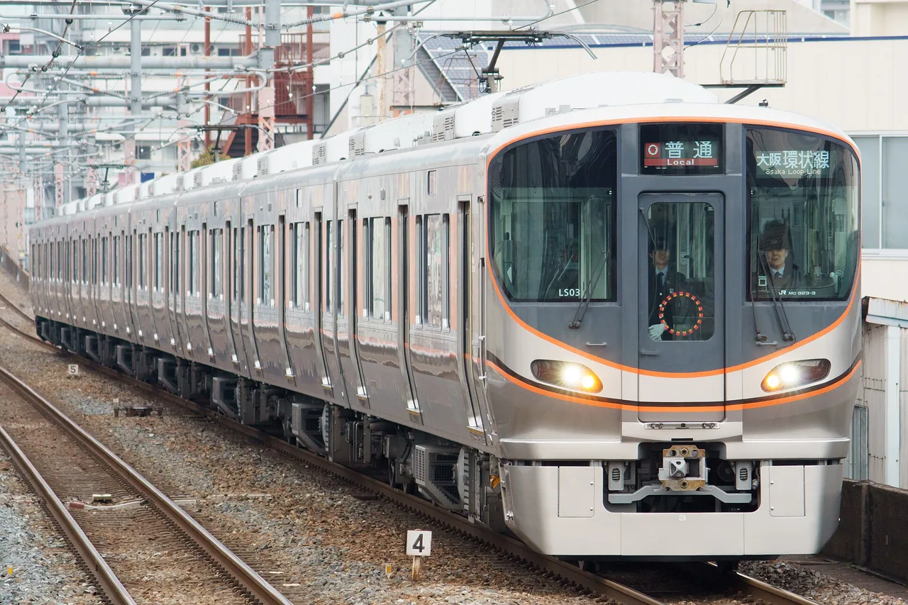

Japan's regional station melodies: 60+ stations worth hearing, north to south
Tokyo's Yamanote Line gets the attention, but the richest station music in Japan is elsewhere. Osaka's loop line plays a different song at all 19 stations, chosen for the neighbourhood — a temple bell for Tennōji, Dvořák's New World for the Shinsekai district. Keikyu's line down to the Miura Peninsula has 23 stations with a local tune each. The Hokuriku Shinkansen commissioned an original melody per station from composers born along the line, and five Sanyō Shinkansen stations announce departures with Galaxy Express 999. This is a verified list of what you can actually hear in 2026, north to south, with the story behind each — plus the ones that have already gone silent, because that list is growing.

How station melodies work outside Tokyo
A departure melody (発車メロディ, hassha merodī) plays while a train's doors are about to close; an approach melody (接近メロディ, sekkin merodī) plays as a train pulls in. Both get lumped together as 駅メロ (eki-mero), and one chosen for a local reason is a ご当地メロディ (gotōchi merodī). Which kind a station uses depends on the operator: JR East and JR West stations mostly use departure melodies; Keikyu's are approach melodies; the Sanyō Shinkansen's 999 is a "departure warning tone". For a listener the difference is only when to have your phone out.
Two habits make regional hunting easier than Tokyo. First, most of these stations are calmer than the Yamanote, so waiting for one departure costs a few minutes and nobody minds you standing at the platform end. Second, whole-line sets exist — Osaka's loop, Keikyu, the Hokuriku Shinkansen — so a single ride "collects" ten or twenty melodies. Our Yamanote guide covers Tokyo's loop; this page is everything else.
Every entry below was checked against the operator's press release, a city or prefecture page, or Japanese railway press, as of August 2026 — the source type is noted in each row. Melodies are withdrawn without notice (JR East in particular says it does not announce changes), so treat "confirmed 2025–26" as strong and "last confirmed 20xx" as "probably still playing, check when you arrive".
Single stations, north to south
| Station · line | Melody | Why here | Since / status |
|---|---|---|---|
| Ichinoseki, Iwate一ノ関 · Tōhoku Shinkansen platforms 11·12 | "Yūgure-doki wa Sabishisō" (N.S.P) — the folk trio's best-known song, cut to about 30 seconds | All three members of N.S.P studied at Ichinoseki's technical college; a memorial spot stands on the Iwai River embankment | 2019-03-20 as a trial, extended repeatedly; the city confirms it runs to at least 2027-02-28 (city page) |
| Sendai, Miyagi仙台 · Shinkansen platforms | "Aoba-jō Koiuta" (Munetaka Satō) — the city's signature ballad, arranged and recorded by the Sendai Philharmonic | Sendai's own song, for Sendai's own station; the first melody update there in 27 years | 2016-07-01 (JR East via railway press); the conventional-line platforms were re-done again in 2018 with songs by Sendai bands |
| Kōriyama, Fukushima郡山 · Shinkansen + conventional | "Kiseki" on the Shinkansen platforms, "Tobira" downstairs — both by GReeeeN | The band formed at dental school in Kōriyama and kept its base there until 2013; a "green door" monument stands outside the station | 2015-04-01 (Oricon); still described as current by local media in 2026 |
| Takasaki, Gunma高崎 · Shinkansen platforms only | "Great Messenger" (platforms 13·14, up trains) and "Saraba Seishun no Hikari" (11·12, down trains) — both Tomoyasu Hotei | Hotei is from Takasaki; the first was written as the theme of the G-Messe Gunma convention centre | 2021-07-03 as a one-year trial; made permanent from 2022-07 at the prefecture's request (Hotei official). Note the conventional-line platforms at Takasaki switched to JR East's generic melodies in 2025 |
| Kasukabe, Saitama春日部 · Tōbu Skytree / Urban Park lines | "Ora wa Ninkimono" — the Crayon Shin-chan theme, a different arrangement on each of the five platforms | The Nohara family lives in Kasukabe; the city and Tōbu did it together to promote "the town where Shin-chan lives" | 2018-10-01 (Tōbu / railway press); no withdrawal reported |
| Tokorozawa, Saitama所沢 · Seibu Ikebukuro & Shinjuku lines | "Tonari no Totoro" on the Ikebukuro Line platforms 3–5, "Sanpo" on the Shinjuku Line platforms 1–2 (Joe Hisaishi, instrumental) | The countryside in My Neighbor Totoro was modelled on the Tokorozawa area; done for the city's 70th anniversary with Miyazaki, Hisaishi and Studio Ghibli's cooperation | 2020-11-03, "for the time being" (Seibu press release) |
| Ōizumi-gakuen, Tokyo大泉学園 · Seibu Ikebukuro Line | "Galaxy Express 999" theme | Nerima Ward's anime-industry heartland; introduced with a ward anime festival, and Leiji Matsumoto lived locally | 2009-03-08 (Mynavi); long-running, no withdrawal reported |
| Mitaka, Tokyo三鷹 · Chūō Line | "Medaka no Gakkō" — the children's song about a school of killifish, in a different arrangement per platform | The composer Yoshinao Nakada lived in Mitaka; introduced for the station's 80th anniversary | 2010 (Mitaka City page). ⚠ The Chūō-Sōbu local line goes one-man in spring 2027, which has ended station melodies on other lines |
| Maihama, Chiba舞浜 · Keiyō Line | Disney songs — originally "Zip-a-Dee-Doo-Dah" (platform 1) and "It's a Small World" (platform 2); platform 1's title has been swapped for park anniversaries and new-attraction campaigns repeatedly over the years ("A Whole New World" as of 2025), so don't expect the original | Gateway to Tokyo Disney Resort | 2004-06-14; melodies certainly playing, but don't rely on any one title — listen and see |
| Kamata, Tokyo蒲田 · Keihin-Tōhoku Line | "Kamata Kōshinkyoku" (Kamata March) — different arrangements north- and southbound | The 1929 song of the Shochiku Kamata film studio, when Kamata was "the world of cinema"; often cited as JR East's first locally themed melody | 1997 (fan archives and local sources; no operator release survives online). ⚠ The Kamata–Ōfuna section of the Keihin-Tōhoku goes one-man from spring 2027 and Kamata sits on the boundary — at risk |
| Chigasaki, Kanagawa茅ケ崎 · Tōkaidō Line | "Kibō no Wadachi" (Southern All Stars) | Keisuke Kuwata's home town; the local chamber of commerce ran a 10,000-response poll in 2001 and the song won, but JR East only agreed thirteen years later | 2014-10-01 (railway press); reported still current in 2024 |
| Isawa-onsen, Yamanashi石和温泉 · Chūō Main Line | "Takeda-bushi" — the folk anthem of Takeda Shingen's country | Hot-spring town in old Takeda territory; introduced when the station's new north–south passage opened. (It is not at Kōfu, despite what some lists say.) | 2016-02-10, both platforms (JR East Hachiōji branch via railway press) |
| Nagano, Nagano長野 · Hokuriku Shinkansen platforms | "Shinano no Kuni" — the prefectural song every child in Nagano learns | Opening of the Hokuriku Shinkansen extension | 2015-01-31 (JR East Nagano branch); see the Hokuriku set below |
| Kōshien, Hyōgo甲子園 · Hanshin Main Line | Normally Hanshin's standard approach melody ("I've Been Working on the Railroad"); during the spring and summer high-school baseball tournaments it becomes that year's tournament song, arranged by Minoru Mukaiya — from 5 August 2026 it is Vaundy's "Kagerō" for the summer championship; spring 2025 was Omoinotake's "Ikuoku Kōnen" | The station for Kōshien Stadium; the swap has been a fixture of both tournaments for a decade | Tournament periods only (Hanshin press releases); check the current year's song when you go. Note: it is not "Rokkō Oroshi", the Tigers' anthem, whatever you've read |
| Shin-Kōbe · Okayama · Hiroshima · Kokura · HakataSanyō Shinkansen platforms | "Galaxy Express 999" (Godiego, 1979) as the departure-warning tone | Introduced on 9 March 2016 — "Three-Nine Day" — to close the line's 40th-anniversary year; JR West chose it as a song that "evokes the moment of departure" | 2016-03-09 (JR West press release); still current in 2024 press coverage |
Also widely reported but not confirmed by an operator or news source we could find: Shin-Aomori's Nebuta festival drums on the Shinkansen platforms (2016), Fukushima's two Yūji Koseki songs (2009), Kiryū's "Yagi-bushi" (2016, on the city's page), and the Kyūshū Shinkansen's folk-song arrangements at Kumamoto and Kagoshima-Chūō. Plausible; listen and tell us.
Osaka Loop Line: 19 stations, 19 songs
JR West's Osaka Loop Line (大阪環状線) is the best single melody ride in Japan. As part of a line-wide makeover, JR West gave every station its own departure melody chosen for "what this station's neighbourhood is like, what the Loop Line is like, what Osaka is like" — three stations in March 2014, Osaka Station in May 2014, and the remaining 15 all at once at 3pm on 22 March 2015, the anniversary of loop operation. A full lap takes about 40 minutes. The reasons below are JR West's own, from its March 2015 announcement; a 2026 Japanese write-up describes the set as still intact.
| Station | Melody | JR West's reason |
|---|---|---|
| Osaka 大阪 | "Yappa Suki ya nen" — Takajin Yashiki | The signature song of a singer "who loved Osaka and was loved by Osaka" |
| Fukushima 福島 | "Musō-bana" — Hiroshi Madoka | The chorus goes "spinning, spinning…" — for a loop line |
| Noda 野田 | "Ichi-shūkan" (One Week) — Russian folk song | Opens with "on Sunday I went to the market" — the central wholesale market is next door |
| Nishikujō 西九条 | "American Patrol" | The transfer station for Universal Studios Japan |
| Bentenchō 弁天町 | "I've Been Working on the Railroad" | Site of the former Transportation Science Museum |
| Taishō 大正 | "Tinsagu nu Hana" — Okinawan folk song | Osaka's Okinawan neighbourhood |
| Ashiharabashi 芦原橋 | "Matsuri" — by the local taiko group Ikari | A taiko-drumming district |
| Imamiya 今宮 | "Daikoku-sama" — school song | Ōkuninushi Shrine ("Kizu's Daikoku-san") nearby |
| Shin-Imamiya 新今宮 | Dvořák, Symphony No. 9 "From the New World" | The Shinsekai ("New World") entertainment district |
| Tennōji 天王寺 | "Ano Kane o Narasu no wa Anata" — Akiko Wada | The bell of Shitennōji temple; the singer is from Osaka |
| Teradachō 寺田町 | "Life Goes On" — Inshist | Written as the Loop Line's own image song |
| Momodani 桃谷 | "Sake to Namida to Otoko to Onna" — Eigo Kawashima | The late singer's connection to Momodani |
| Tsuruhashi 鶴橋 | "Yodel Tabehōdai" — Jakusaburō Katsura with Manpuku Brothers | The neighbourhood is synonymous with yakiniku (the song is about all-you-can-eat) |
| Tamatsukuri 玉造 | "Mary Had a Little Lamb" | The window frames of the Viera Tamatsukuri building under the tracks are laid out as the song's notes |
| Morinomiya 森ノ宮 | "Mori no Kuma-san" (The Other Day I Met a Bear) | "Mori" (forest) is in the station name and the redevelopment concept |
| Ōsakajō-kōen 大阪城公園 | Conch-shell call (original) | Evokes the Siege of Osaka Castle |
| Kyōbashi 京橋 | "Yukai na Makiba" — Old MacDonald, in its Osaka "Umaimon no Uta" version | An Osaka food-song parody, for a lively eating district |
| Sakuranomiya 桜ノ宮 | "Sakuranbo" — Ai Ōtsuka | Cherry trees along the Ōkawa; the singer is from Osaka |
| Temma 天満 | "Hanabi" — aiko | The Tenjin Festival fireworks; the singer is from Osaka |
Keikyu: 23 stations from Shinagawa to the sea
Keikyu (京急), the private railway from Shinagawa to Haneda Airport and down the Miura Peninsula, has used approach melodies since 2008 — the tune plays as the train arrives, so listen before it stops. Keikyu's own 2020 release lists all 23; the local reasons are from Japanese secondary coverage. Highlights on the way to the airport and the sea:
| Station | Melody | Local link · since |
|---|---|---|
| Shinagawa · Haneda Airport T1·T2 品川 · 羽田空港第1・第2 | "Akai Densha" (Quruli) | The band's song about Keikyu's red trains · 2008 |
| Aomono-yokochō 青物横丁 | "Jinsei Iroiro" (Chiyoko Shimakura) | Singer from Shinagawa · 2008 |
| Tachiaigawa 立会川 | "Camptown Races" | Ōi Racecourse · 2009 |
| Heiwajima 平和島 | "Ii Yu da na" | The Heiwajima hot-spring complex · 2009 |
| Keikyu Kamata 京急蒲田 | "Yume de Aetara" | Rats & Star members from Ōta Ward · 2008 |
| Haneda Airport T3 羽田空港第3 | "Paprika" (Foorin) since 21 Nov 2020, chosen by public call; before that "Dragon Night" (Sekai no Owari) from 2015 | Station's 5th (2015) and 10th (2020) anniversaries · 2015/2020 |
| Keikyu Kawasaki 京急川崎 | "Ue o Muite Arukō" / "Sukiyaki" (Kyu Sakamoto) | Sakamoto was from Kawasaki · 2008 |
| Minatochō 港町 | "Minatomachi Jūsan-banchi" (Hibari Misora) | Site of the old Columbia record factory · 2013 |
| Namamugi 生麦 | "New York, New York" | · 2012 |
| Yokohama 横浜 | "Blue Light Yokohama" (Ayumi Ishida) | The city's anthem · 2008 |
| Idogaya 井土ヶ谷 | "Sakura" (Ketsumeishi) | Band member from Idogaya · 2015 |
| Kamiōoka 上大岡 | "Natsuiro" (Yuzu) | Yuzu are from neighbouring Isogo · 2008 |
| Kanazawa-bunko 金沢文庫 | "My Home Town" (Kazumasa Oda) | Oda is from Kanazawa Ward · 2008 |
| Kanazawa-hakkei 金沢八景 | "Michi" (EXILE) | A graduation song for a school town · 2008 |
| Oppama 追浜 | "Atsuki Hoshi-tachi yo" | The BayStars' song — the team's training ground · 2018 |
| Yokosuka-chūō 横須賀中央 | "Yokosuka Story" (Momoe Yamaguchi) | The town's own hit · 2008 |
| Horinouchi 堀ノ内 | "Kamome ga Tonda Hi" (Machiko Watanabe) | Singer from Yokosuka · 2008 |
| Uraga 浦賀 | Godzilla theme | Where Godzilla first came ashore (in the films) · 2008 |
| Zushi-Hayama 逗子・葉山 | "LIFE" (Kimaguren) | Duo from Zushi · 2008 |
| Keikyu Kurihama 京急久里浜 | "Cosmos" (Momoe Yamaguchi) | Kurihama flower park · 2008 |
| Miura-kaigan 三浦海岸 | "Misaki Meguri" | The Miura coast · 2017 |
| Misakiguchi 三崎口 | "Jōgashima no Ame" | Hakushū Kitahara's poem about Jōgashima · 2017 |
Hokuriku Shinkansen: one original per station
When the Hokuriku Shinkansen reached Kanazawa in March 2015 and Tsuruga in March 2024, the two operators did something no other line had: they commissioned an original melody for almost every station from a composer with a local tie, or chose a song with one. Ride Tokyo → Tsuruga and you pass through the whole set. From JR East's Nagano-branch and JR West's press releases:
| Station | Melody | Who / why |
|---|---|---|
| Nagano 長野 | "Shinano no Kuni" | Nagano's prefectural song |
| Iiyama 飯山 | "Furusato" | The lyricist Tatsuyuki Takano was from nearby Nakano |
| Jōetsu-myōkō 上越妙高 | "Natsu wa Kinu" | Composer Sakunosuke Koyama, from Jōetsu |
| Itoigawa 糸魚川 | "Haru yo Koi" | Lyricist Gyofū Sōma, from Itoigawa |
| Kurobe-unazuki-onsen 黒部宇奈月温泉 | "Kirameki — from the City of Water" | By a Toyama-born composer |
| Toyama 富山 | Original | By a Toyama-born producer; "the flow of Toyama's water and the city of glass" |
| Shin-Takaoka 新高岡 | Original | Played on Takaoka's traditional copper orin bowls |
| Kanazawa 金沢 | Original | By a Kanazawa-born musician; "Kanazawa's tradition and the Shinkansen's speed" |
| Komatsu · Kaga-onsen 小松 · 加賀温泉 | Originals | By Yumi and Masataka Matsutōya (2024) |
| Awara-onsen 芦原温泉 | Original | Awara-born composer Tsunemoto Hotta; the Takeda River and rising hot springs (2024) |
| Fukui 福井 | Symphonic "Yūkyū no Ichijōdani" | Tarō Hakase, inspired by the Ichijōdani ruins (2024) |
| Echizen-takefu 越前たけふ | Original | Toshio Hosokawa; built from the recorded strike of Echizen forged blades (2024) |
| Tsuruga 敦賀 | "Koi Koi Tsuruga" | Original for the terminus; "a shining sea, flight into the future" (2024) |
Shinkansen chimes you'll hear on board
Not station melodies, but the other music every Japan traveller ends up humming — the chime before on-board announcements. On the Tōkaidō Shinkansen (Tokyo–Osaka), JR Central's trains switched on 21 July 2023 from the twenty-year-old "AMBITIOUS JAPAN!" (TOKIO) to "Ai ni Ikō" (roughly "Let's go see each other"), sung by UA. On the Sanyō Shinkansen west of Osaka you'll hear JR West's "Ii Hi Tabidachi — Nishi e" (Shinji Tanimura) — but only on JR West-owned trains; through-running JR Central trains keep "Ai ni Ikō" the whole way to Hakata, and JR West said in 2023 it had no plan to change its chime. Since every 500- and 700-series train is JR West's, a Kodama west of Shin-Osaka is your safest bet for the Tanimura chime.
Already gone, or going
This is the section other guides don't have, and it matters: in JR East territory, station melodies are being switched off as lines convert to driver-only operation, because the melody is triggered by a conductor on the platform.
- Sakuragichō (Yokohama): "I've Been Working on the Railroad", played since 2015 at the site of Japan's first railway station, was replaced by a generic melody in May 2025 as part of JR East's standardisation (its platforms now carry the standard Keihin-Tōhoku tune on JR East's list). Yokohama's citizen-feedback log records a request in April 2026 to bring it back; the city passed it to JR East.
- Nambu Line (Kawasaki–Tachikawa): its local melodies — including "Doraemon no Uta" at Noborito — ended in March 2025, the day before one-man service began.
- Yokohama and Negishi Lines went one-man in March 2026; Hachiōji's "Yūyake Koyake" on the Yokohama Line platforms and Kannai's BayStars song are the ones to check.
- Keihin-Tōhoku/Negishi (Ōmiya–Minami-Urawa and Kamata–Ōfuna) and the Chūō-Sōbu local line convert in spring 2027 — that puts Mitaka's "Medaka no Gakkō" on notice and Kamata's "Kamata March", on the section boundary, at risk.
- Yamanote: no date published, within a plan to finish the main Tokyo lines by around 2030. See the Yamanote guide.
Shinkansen-platform melodies (Sendai, Kōriyama, Ichinoseki, Takasaki, Nagano) are not part of that programme, and JR West, Keikyu, Seibu and Tōbu have announced no such change. If your trip is a choice between a Tokyo-suburb melody and a regional one, the Tokyo one is the one that won't wait.
Planning a melody trip
The honest way to plan this is to attach melodies to a trip you're already taking, not the reverse: the Osaka loop is a 40-minute add-on to any Osaka day; the Hokuriku set is what you hear on the way to Kanazawa; Keikyu is your airport train. Two things worth doing deliberately: ride the Osaka loop once all the way round, and if you're crossing to Kyūshū, sit near the door at Okayama or Hiroshima to catch 999. Rail passes and point-to-point tickets:
A nationwide JR Pass only pays off if you're genuinely crossing the country; for a Kansai-plus-Hokuriku or Kantō-plus-Tōhoku loop, the regional passes are usually the better buy. Our 2026 travel changes guide has the current pass prices.
The Japanese you'll hear
| Japanese | Reading | Meaning |
|---|---|---|
| 発車メロディ / 接近メロディ | hassha merodī / sekkin merodī | Departure melody / approach melody |
| ご当地 | gotōchi | "Local specialty" — the same word as on regional snacks and manhole covers |
| まもなく〇番線に列車がまいります | mamonaku …-bansen ni ressha ga mairimasu | "A train is arriving shortly at platform …" — the line an approach melody leads into |
| ドアが閉まります | doa ga shimarimasu | "The doors are closing" |
| ワンマン運転 | wanman unten | Driver-only operation — the reason JR East's melodies are disappearing |
| 環状線 | kanjō-sen | Loop line — Osaka's is the Ōsaka Kanjō-sen |
| 音鉄 | ototetsu | A railway fan who collects sounds |
Almost every station here also has a free station stamp →, and Tokyo's loop has its own six-station melody hunt: Yamanote Line departure melodies →
Common questions
Q. Which Japanese train line has a different melody at every station?
A. JR West's Osaka Loop Line: all 19 stations have had their own locally themed departure melody since 22 March 2015 (three stations and Osaka Station from 2014). Keikyu has approach melodies at 23 stations, and the Hokuriku Shinkansen has an original per station.
Q. Where can I hear Galaxy Express 999 at a station?
A. On the Sanyō Shinkansen platforms at Shin-Kōbe, Okayama, Hiroshima, Kokura and Hakata, as the departure-warning tone, since 9 March 2016. Ōizumi-gakuen on the Seibu Ikebukuro Line in Tokyo has used the same theme as its departure melody since 2009.
Q. Are Japan's station melodies being removed?
A. Some are. JR East is switching station melodies off as its Tokyo-area lines move to driver-only operation — the Nambu Line's ended in March 2025, Sakuragichō's local tune was replaced by a standard one in May 2025, and parts of the Keihin-Tōhoku/Negishi and the Chūō-Sōbu local lines convert in spring 2027. Shinkansen-platform melodies and other operators' melodies are not part of that programme.
Q. What is the Tōkaidō Shinkansen chime?
A. Since 21 July 2023, "Ai ni Ikō" sung by UA, on JR Central trains; it replaced TOKIO's "AMBITIOUS JAPAN!". JR West's Sanyō Shinkansen trains play "Ii Hi Tabidachi — Nishi e".
Q. Is Kōshien Station's melody the Hanshin Tigers song?
A. No. Its regular approach melody is Hanshin's standard tune; during the spring and summer high-school baseball tournaments it switches to that year's tournament song, per Hanshin's press releases.
How we checked: every entry was verified against the operator's press release (JR West, Keikyu, Seibu, Hanshin), a city or prefecture page (Ichinoseki, Mitaka), or Japanese railway press (Norimono News, Tetsudō.com, Oricon, Impress, ITmedia), as of 15 August 2026, and the source type is stated per row. Entries we could not confirm beyond fan sites are listed separately as unconfirmed. Some links are affiliate links (KKday, Viator and partners) — we may earn a commission at no extra cost to you, and it never changes what we recommend.